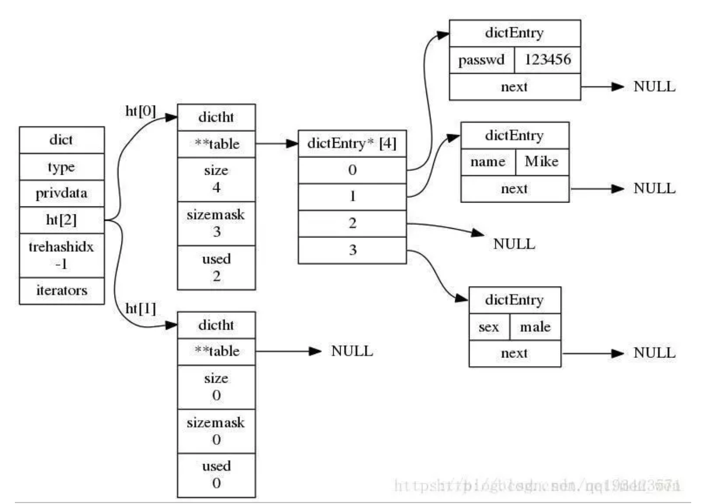
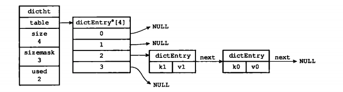

东临碣石，以观沧海。水何澹澹，山岛竦峙。树木丛生，百草丰茂。秋风萧瑟，洪波涌起。日月之行，若出其中。星汉灿烂，若出其里。幸甚至哉，歌以咏志。 —— 汉·曹操 《观沧海》
一、引入
- redis是以键值对存储数据的，所以对象又分为键对象和值对象，即存储一个key-value键值对会创建两个对象，键对象和值对象。
- 键对象总是一个字符串对象，而值对象可以是五大对象中的任意一种。
- 常用命令
type key：查看key所属数据类型object encoding key：显示redis五大数据类型的底层数据结构object idletime key：获得其lru时间object refcount key：被引用次数
- 五种数据类型底层数据结构总览
| 类型 | 编码 |
|---|---|
| STRING(字符串) | INT(长整型) |
| STRING(字符串) | EMBSTR(简单动态字符串) |
| STRING(字符串) | RAW(简单动态字符串) |
| LIST(列表) | >=3.2版本快表QUICKLIST，<3.2版本则为双端链表LINKEDLIST或压缩列表ZIPLIST |
| SET(集合) | INTSET(整数集合) |
| SET(集合) | HT(字典) |
| ZSET(有序集合) | ZIPLIST(压缩列表) |
| ZSET(有序集合) | SKIPLIST(跳表) |
| HASH(哈希) | ZIPLIST(压缩列表) |
| HASH(哈希) | HT(字典) |
存入key-value键值对时并不会指定对象的encoding，redis会根据不统的使用场景来为一个对象设置不同的编码，以达到节约内存、加快访问速度等目的。
redis中的每个对象都是由redisObject结构来表示：
1
2
3
4
5
6
7
8
9
10
11
12
13
14
15
16
17typedef struct redisObject{
//类型
unsigned type;// 4 bits
//编码
unsigned encoding;// 4 bits
//记录最后一次被程序访问的时间
unsigned lru;// 24 bits(3 bytes)
//引用计数
int refcount;// 4 bytes
//指向底层数据结构的指针
void *ptr; // 8 bytes(64位操作系统)
}robjRedisObject对象头需要占据16字节的存储空间((4+4+24)/8 + 8 + 4)
- 不同的对象具有不同的类型type(4bit)
- 同一个类型的type会有不同的编码方式encoding(4bit)
- 为了记录对象的LRU信息，使用了24bit来记录LRU信息
- 每个对象都有个引用计数，当引用计数为零时对象就会被销毁内存被回收。
- ptr指针将指向对象内容(body)的具体存储位置。
RedisObject对象个属性解读
- type属性：记录了对象的类型，即redis五大数据类型，通过命令
type key可得到 - encoding属性和*prt指针：对象的prt指针指向对象底层的数据结构，而数据结构由encoding属性来决定，通过命令
object encoding key可得到，每种数据类型的对象都至少使用了两种不同的编码 - lru：该属性记录该对象最近一次被访问的时间，如果服务器打开了maxmemory选项，并且服务器用于内存回收的算法为volatile-lru或allkeys-lru，当占用内存超过maxmemory设置的上限时，最早被访问的会先被释放。
- refcount：该属性常用于垃圾回收和对象共享
- 用于垃圾回收，使用引用计数法实现，该属性值表示对象被多少个程序引用，当对象被创建时该属性值为1，当该值为0时对象占用的内存会被回收
- 用于对象共享，比如Redis在初始化服务器时就会创建0到9999的字符串对象用于对象共享，每当使用set命令创建一个新字符串对象，如果要创建的字符串已经存在则将指向值的指针指向该字符串对象，并将该对象的refcount加1
- type属性：记录了对象的类型，即redis五大数据类型，通过命令
二、底层数据结构
简单动态字符串
Redis没有直接使用C语言传统的字符串表示(以空字符结尾的字符数组，以下简称C字符串)， 而是自己构建了一种名为简单动态字符串(simple dynamic string，SDS)的抽象类型，并将SDS用作Redis的默认字符串表示。
- 比如说
SET name kobe这个命令，redis将在数据库中创建一个键值对。- 键值对的键是一个字符串对象，对象的底层实现是一个保存着字符串
name的SDS - 键值对的值是一个字符串对象，对象的底层实现是一个保存着字符串
kobe的SDS
- 键值对的键是一个字符串对象，对象的底层实现是一个保存着字符串
- 比如说
SDS定义
1
2
3
4
5
6
7
8
9
10
11
12
13
14
15
16
17
18
19
20
21
22
23
24
25
26
27
28
29
30
31
32
33
34
35
36
37
38# <3.2版本
struct sdshdr {
int len; // 记录buf数组中已使用字节的数量,不包括'\0'的长度,等于SDS所保存字符串的长度
int free; // 记录buf数组中未使用字节的数量
char buf[]; // 字节数组，用于保存字符串：不是用这个数组来保存字符，而是用它来保存一系列二进制数据。
};
# >=3.2版本
/* Note: sdshdr5 is never used, we just access the flags byte directly.
* However is here to document the layout of type 5 SDS strings. */
struct __attribute__ ((__packed__)) sdshdr5 {
unsigned char flags; /* 3 lsb of type, and 5 msb of string length */
char buf[];
};
struct __attribute__ ((__packed__)) sdshdr8 {
uint8_t len; /* used */
uint8_t alloc; /* excluding the header and null terminator */
unsigned char flags; /* 3 lsb of type, 5 unused bits */
char buf[];
};
struct __attribute__ ((__packed__)) sdshdr16 {
uint16_t len; /* used */
uint16_t alloc; /* excluding the header and null terminator */
unsigned char flags; /* 3 lsb of type, 5 unused bits */
char buf[];
};
struct __attribute__ ((__packed__)) sdshdr32 {
uint32_t len; /* used */
uint32_t alloc; /* excluding the header and null terminator */
unsigned char flags; /* 3 lsb of type, 5 unused bits */
char buf[];
};
struct __attribute__ ((__packed__)) sdshdr64 {
uint64_t len; /* used */
uint64_t alloc; /* excluding the header and null terminator */
unsigned char flags; /* 3 lsb of type, 5 unused bits */
char buf[];
};逻辑结构
<3.2版本- free属性的值为0，表示这个SDS没有分配任何未使用空间。
- len属性的值为5，表示这个SDS保存了一个五字节长的字符串。
- buf属性是一个char类型的数组，数组的前五个字节分别保存了’R’、’e’、’d’、’i’、’s’五个字符，而最后一个字节则保存了空字符’\0’
- buf[]除了保存字符串的字符外，还会在末尾保存一个空字符’\0’，空字符不计算在len属性之中，遵循空字符结尾的好处是可以重用一部分C字符串的函数
>3.2版本- len表示sds当前sds的长度，单位是字节，不包括’\0’终止符
- alloc表示当前为sds分配的大小，单位是字节(3.2以前的版本用的free是表示剩余可用空间)
- flags表示当前sdshdr的类型，声明为char 一共有1个字节(8位)，用低三位就可以表示所有5种sdshdr类型
- 要判断一个sds属于什么类型的sdshdr，只需
flags&SDS_TYPE_MASK和SDS_TYPE_n比较即可
- 要判断一个sds属于什么类型的sdshdr，只需
- buf同3.2之前的版本一样
和C字符串对比
获取字符串长度的时间复杂度为O(1)：
- C字符串不记录自身的长度信息，获取字符串长度时会遍历字节数组，直到遇到空字符为止，复杂度为 O(N)
- SDS直接通过
struct sdshdr结构体len属性获取字符串长度，复杂度为O(1)
可以避免缓冲区溢出：
- C字符串不记录自身长度，修改字符串时不会判断本身是否拥有足够的内存空间，当内存空间不足时则会造成缓冲区的溢出.
- 当SDS API需要对SDS进行修改时，API会先检查SDS的空间是否满足修改所需的要求。如果不满足API会自动将SDS的空间扩展至执行修改所需的大小，然后才执行实际的修改操作，所以使用SDS既不需要手动修改SDS的空间大小，也不会出现前面所说的缓冲区溢出问题。
减少修改字符串长度时所需的内存重分配次数
- 空间预分配：用于优化SDS的字符串增长操作，当SDS API对一个SDS进行修改并且需要对SDS进行空间扩展的时候，程序不仅会为SDS分配修改所必须要的空间，还会为SDS分配额外的未使用空间。
- 如果对SDS进行修改之后，SDS的长度(即len属性的值)小于1MB，那么程序分配和len属性同样大小的未使用空间，即free=len
- 如果对SDS进行修改之后，SDS的长度大于等于1MB，那么程序会分配1MB的未使用空间，即free=1MB
- 惰性空间释放：用于优化SDS的字符串缩短操作，当SDS的API需要缩短SDS保存的字符串时，程序并不立即使用内存重分配来回收缩短后多出来的字节，而是使用free属性将这些字节的数量记录起来，并等待将来使用。
- 空间预分配：用于优化SDS的字符串增长操作，当SDS API对一个SDS进行修改并且需要对SDS进行空间扩展的时候，程序不仅会为SDS分配修改所必须要的空间，还会为SDS分配额外的未使用空间。
进制安全
- C字符串中的字符必须符合某种编码(比如ASCII)，并且除了字符串的末尾之外不能包含空字符，否则最先被程序读入的空字符将被误认为是字符串结尾，这些限制使得C字符串只能保存文本数据，而不能保存像图片、音频、视频、压缩文件这样的二进制数据。
- SDS的API都是二进制安全的，所有SDS API都会以处理二进制的方式来处理SDS存放在buf数组里的数据，程序不会对其中的数据做任何限制、过滤、或者假设，数据在写入时是什么样的，它被读取时就是什么样。
编码：字符串对应的编码类型有int、embstr和raw三种，根据值的不同Redis会采用不同的编码
- 当所设置的值是一个long范围内的整数时，会使用int编码
- 当设置的值是一个长度小于等于44的字符串时，会使用embstr编码
- 当设置的值是一个长度大于44的字符串时，会使用raw编码
embstr和raw按44字节为分界是在Redis3.2开始的，之前是以39字节为分界的。
链表
基础
- 数据结构是计算机存储、组织数据的方式，它是指相互之间存在一种或多种特定关系的数据元素的集合。其中，结构就是指数据元素之间存在的关系，分为逻辑结构和存储结构(物理结构)。逻辑结构是指反映数据元素之间的逻辑关系的数据结构，其中的逻辑关系是指数据元素之间的前后间关系，而与他们在计算机中的存储位置无关。物理结构指数据的逻辑结构在计算机存储空间的存放形式。
- 数据结构有很多种，一般按照数据的逻辑结构对其进行简单的分类，分为线性结构和非线性结构两类。线性结构最突出的特点是数据元素之间存在一对一的线性关系，如线性表、栈、队列、双端队列、数组和串等，非线性结构则存在多对多的关系，如集合、树、图等。
- 线性结构拥有两种不同的存储结构，即顺序存储结构和链式存储结构。顺序存储的线性表称为顺序表，其存储元素是连续的；链式存储的线性表称为链表，其存储元素不一定是连续的，元素节点中存放数据元素以及相邻元素的地址信息。
- 链表是一种常见的线性数据结构，根据链表的存储特点一般又分为单链表和双链表。Redis的底层语言C并没有内置这种数据结构，所以Redis构建了自己的链表实现，早期版本的redis(<3.2)的list底层数据结构之一就是双端链表。
从src的源码目录中可看到如下结构体定义：
1
2
3
4
5
6
7
8
9
10
11
12
13
14
15
16
17
18
19
20
21
22
23
24
25
26
27
28
29
30
31
32
33
34
35
36
37
38
39
40
41
42
43
44
45
46
47
48
49
50
51
52
53
54
55
56
57
58
59#adlist.h
typedef struct listNode {
struct listNode *prev; #前置节点
struct listNode *next; #后置节点
void *value; #节点内容
} listNode;
typedef struct list {
listNode *head; #表头节点
listNode *tail; #表尾节点
void *(*dup)(void *ptr); #节点值复制函数
void (*free)(void *ptr); #节点值释放函数
int (*match)(void *ptr, void *key); #节点值对比函数
unsigned long len; #节点数量
} list;
#adlist.c
list *listCreate(void)
{
struct list *list;
if ((list = zmalloc(sizeof(*list))) == NULL)
return NULL;
list->head = list->tail = NULL;
list->len = 0;
list->dup = NULL;
list->free = NULL;
list->match = NULL;
return list;
}
list *listInsertNode(list *list, listNode *old_node, void *value, int after) {
listNode *node;
if ((node = zmalloc(sizeof(*node))) == NULL)
return NULL;
node->value = value;
if (after) {
node->prev = old_node;
node->next = old_node->next;
if (list->tail == old_node) {
list->tail = node;
}
} else {
node->next = old_node;
node->prev = old_node->prev;
if (list->head == old_node) {
list->head = node;
}
}
if (node->prev != NULL) {
node->prev->next = node;
}
if (node->next != NULL) {
node->next->prev = node;
}
list->len++;
return list;
}
- 由以上结构体定义及方法可知其特点：
- 链表节点有prev和next指针，是一个双端链表，获取某个节点的前置节点和后置节点的复杂度都是O(1)。
- 表头节点的prev指针和表尾节点的nex指针指向NULL，因此是一个无环链表。
- list结构包含表头指针和表尾指针，所以程序获取链表的表头节点和表尾节点的复杂度为O(1)。
- list结构有链表长度计数器，所以程序获取链表节点数量的复杂度为O(1)。
- 链表节点的内容value使用
void*指针来保存，可以通过list结构的dup、free、match三个属性为节点值设置类型特定函数，所以链表可以用于保存各种不同类型的值。
字典/哈希表
概念
- 字典，又称为符号表(symbol table)、关联数组(associative array)或映射(map)，是一种用于保存键值对的抽象数据结构，它经常作为一种数据结构内置在很多高级编程语言里面。
- 由于Redis所使用的C语言并没有内置这种数据结构，因此Redis构建了自己的字典实现。
- Redis的字典底层实现是通过哈希表，一个哈希表里面可以有多个哈希表节点，而每个哈希表节点就保存了一个字典中的一个键值对。
- dictEntry(哈希表结点)，dictType(字典类型函数)，dictht(哈希表)和dict(字典)四个结构体来实现Redis字典结构
- 哈希表(Hash table，也叫散列表)，是根据关键码值(key value)而直接进行访问的数据结构，它通过把关键码值映射到表中一个位置来访问记录，以加快查找的速度。这个映射函数叫做散列函数，存放记录的数组叫做哈希表。
- 字典，又称为符号表(symbol table)、关联数组(associative array)或映射(map)，是一种用于保存键值对的抽象数据结构，它经常作为一种数据结构内置在很多高级编程语言里面。
数据结构
- 字典
- type是一个指向
dict.h/dictType结构的指针，保存了一系列用于操作特定类型键值对的函数 - privdata保存了需要传给上述特定函数的可选参数；
- ht是两个哈希表，一般情况下，只使用
ht[0]，只有当哈希表的键值对数量超过负载(元素过多)时，才会将键值对迁移到ht[1]，这一步迁移被称为rehash，即重哈希 - rehashidx由于哈希表键值对有可能很多很多，所以
rehash不是瞬间完成的，需要按部就班，那么rehashidx就记录了当前 rehash 的进度，当rehash完毕后，将rehashidx置为-1；
- type是一个指向
- 哈希表
- table：一个数组，数组中的每个元素都是一个指向dictEntry结构的指针，每个dictEntry结果保存着一个键值对
- size：哈希表的大小，也即是table数组的大小
- used：表示哈希表中已经存储的键值对的个数
- sizemask：大小永远为
size-1，该属性用于计算哈希值，它和哈希值一起决定了一个键应该被放到table数组的哪个索引上面
- 哈希表节点用dictEntry结构表示，每个dictEntry结构都保存着一个键值对。
- 除字典、哈希表、哈希表节点三种数据结构外，还有另外一种结构体dictType：保存着操作字典不同类型key和value的方法的指针
1
2
3
4
5
6
7
8
9
10
11
12
13
14
15
16
17
18
19
20
21
22
23
24
25
26
27
28
29
30
31
32
33
34
35
36
37
38
39
40
41
42
43
44
45
46
47
48
49
50//dict.h/dict
typedef struct dict {
dictType *type; //指向dictType结构，dictType结构中包含自定义的函数，这些函数使得key和value能够存储任何类型的数据。
void *privdata; //私有数据，保存着dictType结构中函数的参数。
dictht ht[2]; //两张哈希表。
long rehashidx; //rehash的标记，rehashidx==-1，表示没在进行rehash
int iterators; //正在迭代的迭代器数量
} dict;
//dict.h/dictht
typedef struct dictht {
dictEntry **table;//哈希表数组
unsigned long size;//哈希表大小
unsigned long sizemask;//哈希表大小掩码，用于计算索引值，总是等于size-1
unsigned long used;//该哈希表已有节点的数量
} dictht;
//dict.h/dictEntry
typedef struct dictEntry {//字典的节点
void *key;//key属性保存着键值对中的键
union {
void *val;
uint64_t u64;//这两个参数很有用
int64_t s64;
} v;//v属性保存着键值对中的值，它是一个联合类型，值可以是一个指针、一个uint64整数或一个int64_t整数
struct dictEntry *next;//指向下一个hash节点，用来解决hash键冲突（collision）
} dictEntry;
//dict.h/dictType
typedef struct dictType {
//计算hash值的函数
unsigned int (*hashFunction)(const void *key);
//复制key的函数
void *(*keyDup)(void *privdata, const void *key);
//复制value的函数
void *(*valDup)(void *privdata, const void *obj);
//比较key的函数
int (*keyCompare)(void *privdata, const void *key1, const void *key2);
//销毁key的析构函数
void (*keyDestructor)(void *privdata, void *key);
//销毁val的析构函数
void (*valDestructor)(void *privdata, void *obj);
} dictType;

- 字典
字典应用
- Redis的数据库就是使用字典作为底层实现的，通过key和value的键值对形式代表了数据库中全部数据
- Redis中所有对数据库的增、删、查、改的命令都是建立在对字典的操作上
- Redis中带过期时间的key的集合也是字典
- Redis中哈希键的底层实现也是字典，当一个哈希键包含的键值对比较多或键值对中的元素都是比较长的字符串时，Redis就会使用字典作为哈希键的底层实现。
扩展
哈希函数
- 哈希函数是一种映射关系，根据数据的关键词key，通过一定的函数关系计算出该元素存储位置的函数，表示为：address = Hash(key)。
- 常见哈希函数构造方法
- 直接定址法
- 除留余数法(取模)
- 数字分析法
- 平方取中法
- 折叠法(叠加法)
- 随机数法
- redis使用的哈希函数
- Thomas Wang’s 32 bit Mix函数，对一个整数进行哈希，该方法在dictIntHashFunction中实现
- 使用MurmurHash2哈希算法对字符串进行哈希，该方法在dictGenHashFunction中实现
- 使用基于djb哈希的一种简单的哈希算法，该方法在dictGenCaseHashFunction中实现
哈希冲突
- 选用哈希函数计算哈希值时，不同的key会得到相同的结果，这就是哈希冲突。
- 解决冲突
- 开放寻址法
- 再散列法
- 链地址法(拉链法)
- 建立公共溢出区
rehash：随着字典操作的不断执行，哈希表保存的键值对会不断增多(或者减少)，为了让哈希表的负载因子维持在一个合理的范围之内，当哈希表保存的键值对数量太多或者太少时，需要对哈希表大小进行扩展或者收缩，这就是rehash。
- 负载因子：当前已使用结点数量除上哈希表的大小，具体到redis字典即
load_factor = ht[0].used / ht[0].size - 哈希表扩展：发生在元素的个数等于哈希表数组的长度时，进行2倍的扩容；
- 为
ht[1]分配空间，大小为第一个大于等于ht[0].used*2的2的幂【这块儿待查看redis源码确定，有的说进行2倍的扩容】 - 将保存在
ht[0]上的键值对rehash到ht[1]上，rehash就是重新计算哈希值和索引并且重新插入到ht[1]中，插入一个删除一个 - 当
ht[0]包含的所有键值对全部rehash到ht[1]上后，释放ht[0]的空间，将ht[1]设置为ht[0]，并且在ht[1]上新创件一个空的哈希表为下一次 rehash 做准备
- 为
- 哈希表扩展demo
- 执行rehash前
ht[0].used当前的值为4，4*2=8=(2^3)恰好是第一个大于等于4*2的2的n次方，所以程序会将ht[1]哈希表的大小设置为8。下图展示了ht[1]分配空间之后字典的样子- 将
ht[0]包含的四个键值对都rehash到ht[1]如下图 - 释放
ht[0]，将ht[1]设置为ht[0]，然后为ht[1]分配一个空白哈希表，至此哈希表的扩展操作执行完毕，见下图
- 执行rehash前
- 负载因子：当前已使用结点数量除上哈希表的大小，具体到redis字典即
哈希表收缩：发生在当元素个数为数组长度的10%时
哈希表的收缩，同样是为
ht[1]分配空间，大小等于max(ht[0].used, DICT_HT_INITIAL_SIZE)，然后和扩展做同样的处理即可。哈希表扩展和收缩时机
- 当一下条件的任意一个被满足时，程序会自动开始对哈希表执行扩展操作：
- 服务器目前未在执行BGSAVE命令或者BGREWRITEAOF命令，并且哈希表的负载因子大于等于1。
- 服务器目前正在执行BGSAVE命令或者BGREWRITEAOF命令，并且哈希表的负载因子大于等于5。
- 当哈希表的负载因子小于0.1时，程序自动开始对哈希表执行收缩操作。
收缩或者扩展哈希表需要将
ht[0]表中的所有键全部rehash到ht[1]中，但是rehash操作不是一次性、集中式完成的(当键值对数量非常多的时候，大量的计算很可能导致服务器宕机)，而是分多次、渐进式、断续进行的，这样才不会对服务器性能造成影响。- 当一下条件的任意一个被满足时，程序会自动开始对哈希表执行扩展操作：
渐进式rehash
关键
- 字典结构dict中的一个成员rehashidx，当rehashidx为-1时表示不进行rehash，当rehashidx值为0时表示开始进行rehash
- 在rehash期间，每次对字典的添加、删除、查找、更新操作时都会判断是否正在进行rehash操作，如果是则顺带进行单步rehash，并将rehashidx+1
- 当rehash时进行完成时，将rehashidx置为-1，表示完成rehash
实现
- 为
ht[1]分配空间，让字典同时持有ht[0]和ht[1]两个哈希表 - 在字典中维持一个索引计数器变量rehashidx，并将它的值设置为0，表示rehash工作正式开始
- 在rehash进行期间，每次对字典执行添加、删除、查找、更新时，程序除了执行指定的操作以外，还顺带将
ht[0]哈希表在rehashidx索引上的所有键值对rehash到ht[1]，当rehash工作完成之后，程序将将rehashidx属性的值+1 - 随着字典操作的不断执行，最终在某个时间点上
ht[0]的所有键值对都会被都会被rerhash至ht[1]，这时程序程序将rehashidx属性的值设为-1，表示rehash操作已完成
- 为
注意
- 在进行渐进式rehash的过程中字典会同时使用
ht[0]和ht[1]两个哈希表，所以在渐进式rehash进行期间，字典的删除、查找、更新等操作会在两个哈希表上进行。如要在字典里面查找一个键key，程序会现在ht[0]里面进行查找，如果没找到就会继续到ht[1]里面进行查找。 - 在渐进式rehash执行期间，新增加到字典的键值对一律会被保存到
ht[1]里面而ht[0]则不再进行任何添加操作，这一措施保证了ht[0]包含的键值对数量只会减少不会增加，并随着rehash 操作的执行而最终变成空表。
- 在进行渐进式rehash的过程中字典会同时使用
ziplist
定义
官方定义
1
The ziplist is a specially encoded dually linked list that is designed to be very memory efficient. It stores both strings and integer values, where integers are encoded as actual integers instead of a series of characters. It allows push and pop operations on either side of the list in O(1) time.
- 百度翻译过来：ziplist是一种特殊编码的双链表，它的设计非常节省内存。它存储字符串和整数值，其中整数被编码为实际整数(按真正的二进制表示进行编码)而不是一系列字符(编码成字符串序列)。它允许在O(1)时间内对列表的任一侧执行push和pop操作。
- ziplist特殊之处在于没有维护双向指针prev和next，而是存储上一个entry的长度和当前entry的长度，通过长度推算下一个元素在什么地方，下面会说。
- ziplist是由一系列特殊编码的内存块构成的列表，一个Ziplist可以包含多个节点(entry)，每个节点可以保存一个长度受限的字符数组(不以\0结尾的char数组)或者整数。
- ziplist充分体现了redis对于存储效率的追求：一个普通的双向链表，链表中每一项都独立占用一块内存，各项之间用地址指针(或引用)连接起来，这种方式会带来大量的内存碎片，而且地址指针也会占用额外的内存；而ziplist却是将表中每一项存放在前后连续的地址空间内，一个ziplist整体占用一大块内存。
- 百度翻译过来：ziplist是一种特殊编码的双链表，它的设计非常节省内存。它存储字符串和整数值，其中整数被编码为实际整数(按真正的二进制表示进行编码)而不是一系列字符(编码成字符串序列)。它允许在O(1)时间内对列表的任一侧执行push和pop操作。
具体结构：redis源码并没有具体的ziplist结构体定义，
ziplist.c文件头部有一个简单的描述，即ziplist大体由一下几部分构成<zlbytes> <zltail> <zllen> <entry> <entry> ... <entry> <zlend>- zlbytes：32位无符号整型uint32_t，表示整个压缩列表占用的字节数
- 在对压缩列表进行内存重分配或计算zlend的位置时使用。
- zltail：32位无符号整型uint32_t，表示压缩列表表尾节点距离压缩列表的起始地址有多少字节
- 通过这个偏移量无须遍历整个压缩列表就可以确定表尾节点的地址。
- zllen：16位无符号整型uint16_t，表示压缩列表包含的节点entry数量(最多2^16 - 1个节点)，由
ziplist.c文件ziplistLen方法中可知：- 当这个属性的值小于UINT16_MAX(65535)时，这个属性的值就是压缩列表包含节点的数量；
- 当这个值等于UINT16_MAX时，节点的真实数量需要遍历整个压缩列表才能计算得出。
- entry：压缩列表包含的各个节点，节点的长度由节点保存的内容决定。
- zlend：8位无符号整型uint8_t，值固定为
0xFF(十进制255)，用于标记压缩列表的末端。
- zlbytes：32位无符号整型uint32_t，表示整个压缩列表占用的字节数
1
2
3
4
5
6
7
8
9
10
11
12
13
14
15
16
17
18
19
20
21
22
23
24
25
26#根据ziplist.c文件头部的描述可以大概知道其结构
typedef struct ziplist{
uint32_t zlbytes; #ziplist分配的内存大小
uint32_t zltail; #达到尾部的偏移量
uint16_t zllen; #存储元素实体个数
unsigned char* entry[]; #存储内容实体元素
unsigned char zlend; #尾部标识
}ziplist;
#src/ziplist.c
typedef struct zlentry {
unsigned int prevrawlensize; # 前一个节点所占的字节数(prevrawlen长度确定后，不同的编码会有不同的prevrawlensize)
unsigned int prevrawlen; # 前一个节点长度
unsigned int lensize; # 当前节点所占的字节数(同prevrawlensize)
unsigned int len; # 当前节点长度
unsigned int headersize; # 当前节点header的大小，等于`prevrawlensize + lensize`
unsigned char encoding; # 当前节点编码
unsigned char *p; # 指向当前节点的指针(当前节点内容)
} zlentry;
#zlentry结构体只是为了方便描述每个节点信息，实际在内存中存储信息包含以下信息
typedef struct entry {
unsigned int prevlen;
unsigned char encoding;
unsigned char *entyr-data;
}zlentry;prevlen：记录了前一个节点的长度(字节为单位)。
- 如果前一节点的长度小于254字节，那么prevlen的长度为1字节，用于保存前一节点的长度；
- 如果前一节点的长度大于等于254字节， 那么prevlen属性的长度为5字节，其中：
- 第一个字节会被设置为0xFE(十进制值254)；
- 后面四个字节则用于保存前一节点的长度。
encoding：记录了当前节点的entry-data属性所保存数据的类型(字符串还是数字)及长度，其依赖entry-data具体内容，一般可根据encoding第一个 字节的前2位内容进行区分：
前2位都是1的时候表示存储的是数字，其余则是字节数组，共分为以下9种情况：
序号 encoding编码 encoding长度 entry-data长度 entry-data类型 1 00xxxxxx 1字节 6位 最大长度63(2^6 - 1)的字节数组 2 01xxxxxx xxxxxxxx 2字节 14位 最大长度16383(2^14)-1的字节数组 3 10______ xxxxxxxx xxxxxxxx xxxxxxxx xxxxxxxx 5字节 32位 最大长度(2^32)-1的字节数组 4 1100 0000 1字节 2字节 int16整数 5 1101 0000 1字节 4字节 int32整数 6 1110 0000 1字节 8字节 int64整数 7 1111 0000 1字节 3字节 24位整数 8 1111 1110 1字节 1字节 8位整数 9 1111 xxxx 1字节 特殊0 没有entry-data字段，xxxx表示0~12之间的整数 针对以上第9中情况，xxxx的值在0001和1101之间(其中0000和1110已被占用，1111被zlend占用)，可表示的真实数据为1~13。另外，小数值应该从0开始，因此这13个值分别表示0到12，即xxxx的值减去1才是它所要表示的那个整数数据的值。
entry-data：记录了实际存储的数据。
为了方便理解，可以记为
<prevlen> <<encoding+lensize><len>> <data>
官方例子
- 假设存储数字2和5，那么压缩表的结构如下(16进制表示，redis采用的是小端模式存取数据)：
1
2
3* [0f 00 00 00] [0c 00 00 00] [02 00] [00 f3] [02 f6] [ff]
* | | | | | |
* zlbytes zltail zllen "2" "5" zlend- 对于zlbytes对应的数据
0f 00 00 00，由于使用的小端模式，实际数据为00 00 00 0f，转为十进制为15，即整个ziplist占用15字节的内存； - 同理，由zltail可得到偏移量为12；
- 同理，由zllen可知整个压缩列表包含2个节点；
- 对于内容为2的节点，由于其没有前置节点，prevlen等于0并占用1个字节，encoding部分由于其满足第9种情况，占用1个字节，2的2进制为0010加1则为0011，拼接前缀后为11110011，转为16进制即为f3，没有entry-data部分；
- 对于内容为5的节点，前置节点2占用2个字节，小于254仍占用1字节，encoding部分同样满足第9种情况最终可得f6，没有entry-data部分；
- zlend固定值为ff(十进制的255)
此时新加入一个节点，其内容为”hello world”，则ziplist则应为如下结构：
- “hello world”字符串长度为11，满足第1种1情况00xxxxxx，转为16进制就是0b，及entry-data部分
68656c6c6f20776f726c640a
1
2
3* [0f 00 00 00] [0c 00 00 00] [02 00] [00 f3] [02 f6] [02 0b 68656c6c6f20776f726c640a] [ff]
* | | | | | | |
* zlbytes zltail zllen "2" "5" "hello world" zlend扩展
大小端
在计算机系统中，数据是以字节为单位存放的，每个地址单元都对应着一个字节，一个字节为8bit。C语言中存在不同的数据类型，每个数据类型占用的字节数各不相同，如int型在32位系统中占4个字节。以C语言开发的各种应用，在存放数据时就存在怎样存放多个字节的问题，因此就出现了大端存储模式和小端存储模式。
大端模式，是指数据的高字节保存在内存的低地址中，而数据的低字节保存在内存的高地址中，这样的存储模式有点儿类似于把数据当作字符串顺序处理：地址由小向大增加，而数据从高位往低位放，这和我们的阅读习惯一致。
小端模式，是指数据的高字节保存在内存的高地址中，而数据的低字节保存在内存的低地址中，这种存储模式将地址的高低和数据位权有效地结合起来，高地址部分权值高，低地址部分权值低。
下面以
unsigned int val=0x12345678为例，分别看看在两种字节序下其存储情况，我们可以用unsigned char buf[4]来存储val对于大端模式：
1
2
3
4
5
6---------------
高地址 -- buf[3] (0x78) -- 数据低位
buf[2] (0x56)
buf[1] (0x34)
低地址 -- buf[0] (0x12) -- 数据高位
---------------对于小端模式
1
2
3
4
5
6---------------
高地址 -- buf[3] (0x12) -- 数据高位
buf[2] (0x34)
buf[1] (0x56)
低地址 -- buf[0] (0x78) -- 数据低位
---------------
| 内存地址 | 小端模式存放内容 | 大端模式存放内容 |
|:--:|:--:|:--:|
| 0x4000 | 0x78 | 0x12 |
| 0x4001 | 0x56 | 0x34 |
| 0x4002 | 0x34 | 0x56 |
| 0x4003 | 0x12 | 0x78 |intset
定义：intset即整数集合，一个由整数组成的有序集合，从而便于在上面进行二分查找进而快速地判断一个元素是否属于这个集合。它在内存分配上与ziplist有些类似，是连续的一整块内存空间，而且对于大整数和小整数(按绝对值)采取了不同的编码(INTSET_ENC_INT16/32/64)，尽量对内存的使用进行了优化，其内部结构如下(redis-6.0.7)：
数据结构
- encoding：编码方式，contents数组的真正类型取决于encoding属性的值；
- INTSET_ENC_INT16，则contents数组里的每个数据项都是一个int16_t类型的整数值，可表示范围2^16次方，即
-32768~32767 - INTSET_ENC_INT32，则contents数组里的每个数据项都是一个int32_t类型的整数值，可表示范围2^32次方，即
-2147483648~2147483647 - INTSET_ENC_INT64，则contents数组里的每个数据项都是一个int64_t类型的整数值，可表示范围2^64次方，即
-9223372036854775808~9223372036854775807
- INTSET_ENC_INT16，则contents数组里的每个数据项都是一个int16_t类型的整数值，可表示范围2^16次方，即
- length：整数集合包含的元素数量，也即是contents数组的长度；
- encoding和length两个字段构成了intset的头部header
- contents：整数集合的底层实现，集合的每个元素都是contents数组的一个数组项(item)，各个项在数组中按值的大小从小到大有序地排列(便于二分查找)，并且数组中不包含任何重复项。
1
2
3
4
5typedef struct intset {
uint32_t encoding;
uint32_t length;
int8_t contents[];
} intset;- encoding：编码方式，contents数组的真正类型取决于encoding属性的值；
当新元素的类型比整数集合现有所有元素的类型都要长时，整数集合需要先进行升级(upgrade)，然后才能将新元素添加到整数集合里面；一旦进行了升级，编码就会一直保持升级后的状态。
quicklist
官方定义：quicklist.c - A doubly linked list of ziplists.即quicklist是一个ziplist过的linkedlist，它由多个节点Node组成，每个节点都是一个ziplist。
数据结构
1
2
3
4
5
6
7
8
9
10
11
12
13
14
15
16
17
18
19
20
21
22
23
24
25
26
27
28
29
30
31
32
33
34
35
36
37
38//src/quicklist.h
typedef struct quicklist {
quicklistNode *head; #头节点指针
quicklistNode *tail; #尾节点指针
unsigned long count; #所有ziplist数据项entry的个数总和
unsigned long len; #quicklistNode节点总数
int fill : QL_FILL_BITS; #每个节点的最大容量，存放list-max-ziplist-size参数的值
unsigned int compress : QL_COMP_BITS; #quicklist的压缩深度，存放list-compress-depth参数的值
unsigned int bookmark_count: QL_BM_BITS; #bookmarks数组的大小
quicklistBookmark bookmarks[]; #一个可选字段，用来quicklist重新分配内存空间时使用，不使用时不占用空间
} quicklist;
typedef struct quicklistNode {
struct quicklistNode *prev; #前置节点指针
struct quicklistNode *next; #后置节点指针
unsigned char *zl; #不设置压缩数据参数recompress时指向一个ziplist结构
#设置压缩数据参数recompress时指向quicklistLZF结构
unsigned int sz; #ziplist的字节数(ziplist被压缩了，这个sz的值仍然是压缩前的ziplist大小)
unsigned int count : 16; #ziplist中的节点entry数
unsigned int encoding : 2; #编码，只有两个值：1表示未压缩，2表示使用LZF算法进行了压缩
unsigned int container : 2; #quicklistNode节点是否采用ziplist结构保存数据，默认2表示使用ziplist作为数据容器。
unsigned int recompress : 1; #quicklist节点的ziplist之前是否被解压缩过，等于1时需要再次被压缩
unsigned int attempted_compress : 1; #测试时使用
unsigned int extra : 10; #额外扩展位，占10bits长度
} quicklistNode;
typedef struct ziplist{
uint32_t zlbytes; #ziplist分配的内存大小
uint32_t zltail; #达到尾部的偏移量
uint16_t zllen; #存储元素实体个数
unsigned char* entry[]; #存储内容实体元素
unsigned char zlend; #尾部标识，定值十进制255
}ziplist;
typedef struct quicklistLZF {
unsigned int sz; #表示压缩后的ziplist大小
char compressed[]; #存放压缩后的ziplist字节数组
} quicklistLZF;
相关配置
- list-compress-depth val
- 0: 特殊值，表示都不压缩，默认值。
1~N: 表示quicklist两端各有1~N个节点不压缩，中间的节点压缩，如上图list-compress-depth的值为1
- list-max-ziplist-size val
- 当val大于0时，表示一个quicklistNode结构中zl所指向的ziplist所包含的数据项的最大值，如当这个参数配置成5的时候表示每个quicklistNode的ziplist最多包含5个数据项。
- val值是由quicklist结构的fill字段来存储的，fill字段是16bit，所以它所能表达的值能够用16bit来表示，即最多可存储2^16个数据项。
- 当val小于0时，其能够表示的ziplist最大长度是64Kb，具体如下：
- -5: 每个quicklist节点上的ziplist大小不能超过64Kb。
- -4: 每个quicklist节点上的ziplist大小不能超过32Kb。
- -3: 每个quicklist节点上的ziplist大小不能超过16Kb。
- -2: 每个quicklist节点上的ziplist大小不能超过8Kb，默认值。
- -1: 每个quicklist节点上的ziplist大小不能超过4Kb。
- 当val大于0时，表示一个quicklistNode结构中zl所指向的ziplist所包含的数据项的最大值，如当这个参数配置成5的时候表示每个quicklistNode的ziplist最多包含5个数据项。
- list-compress-depth val
ziplist中每一个数据项，最少需要2个字节来表示：1个字节的prevlen和1个字节的data(encoding和entry-data合并)，所以ziplist中数据项的个数不会超过32K，用16bit来表达足够了。
- 16bit怎么就足够了？
skiplist
定义：跳跃列表是一种特殊的有序数据结构，它在有序链表的基础上增加了索引从而加速查询，具体做法是在每个节点中维持多个指向其他节点的指针，可以达到O(logn)的时间复杂度。
数据结构定义(5.0版本，见
src/server.h)- zskiplistNode
- ele：zset元素
- score：zset元素分值
- backward：后退指针
- level.forward：前进指针，指向链表下一个节点的指针
- level.span：这个前向指针跨越的节点数量
- zskiplist
- head：表头，负责维护跳跃表的节点指针。
- tail：表尾，全部由NULL组成，表示跳跃表的末尾。
- length：节点数量。
- level：最大层数。
- zset
1
2
3
4
5
6
7
8
9
10
11
12
13
14
15
16
17
18
19
20
21#5.0版本 src/server.h
typedef struct zskiplistNode {
sds ele;
double score;
struct zskiplistNode *backward;
struct zskiplistLevel {
struct zskiplistNode *forward;
unsigned long span;
} level[];
} zskiplistNode;
typedef struct zskiplist {
struct zskiplistNode *header, *tail;
unsigned long length;
int level;
} zskiplist;
typedef struct zset {
dict *dict;
zskiplist *zsl;
} zset;- zskiplistNode
相关配置
- 当有序集合中的元素数超过
zset-max-ziplist-entries或其中任意一个元素的数据长度超过zset-max-ziplist-value时，就由ziplist自动转化为zskiplist，配置如下：
1
2zset-max-ziplist-entries 128
zset-max-ziplist-value 64- 当有序集合中的元素数超过
特性
- 由多层组成，每层都是一个有头节点的有序链表，且每个节点肯定都存在于第1层
- 如果一个节点有第i层，那么它肯定存在于(
1~i-1)层 - 如果一个节点有第i层指针，那么它有第(i+1)层指针的概率为p(
#define ZSKIPLIST_P 0.25，见于server.h)。 - 层数不会超过一个的最大值(
#define ZSKIPLIST_MAXLEVEL 32，见于server.h)。
三、五种基本数据类型详解
string
字符串是redis最基本的数据类型，其它几种数据类型构成也包含字符串对象，其长度不能超过512M。
redis中对于浮点数类型也是作为字符串保存的，在需要的时候再将其转换成浮点数类型
编码：字符串对象的编码可以是int，raw或者embstr。
- int编码：保存的是可以用long类型表示的整数值。
- 当字符串保存的是一个可以用long类型来表示的整数时，那么robj对象里的属性ptr的类型void *就会被替换为long，而encoding的值会设置为int表示该字符串的实现方式是整型。
- embstr编码：全称
embedded string，字符串的空间将会和redisObject对象的空间一起分配，两者在同一个内存块中。保存长度小于44字节的字符串(redis3.2版本之前是39字节)。
- 当字符串保存的是一个小于等于44个字节的字符串时，那么robj对象里的属性ptr就会指向一个SDS对象，而encoding的值会设置为embstr表示该字符串的实现方式是SDS（简单动态字符串）。
- embstr是一种用来保存短字符串的编码方式，embstr编码通过调用一次内存分配函数来创建一块连续的内存空间，即redisObject对象和它的ptr指针指向的SDS对象是连续的。
- 不过embstr编码的字符串对象是只读性的，一旦对其指向APPEND命令追加字符串会导致其变为raw编码实现。
- raw编码：保存长度大于44字节的字符串(redis3.2版本之前是39字节)。
- 当字符串对象保存的是一个超过44个字节的字符串时，那么robj对象里的属性ptr就会指向一个SDS对象，而encoding的值会设置为raw表示该字符串的实现方式是SDS（简单动态字符串）
- raw编码的字符串对象是可读可写的，对其指向APPEND命令追加字符串会不会导致其实现改变，如果追加的字符串的长度超过其free属性值，会在追加前重新进行内存空间分配。

- embstr与raw的区别
- embstr的创建只需分配一次内存，而raw为两次(一次为sds分配对象，第二次为objet分配对象，embstr省去了第一次)
- embstr释放内存的次数为一次，raw为两次
- embstr的object和sds放在一起，更好地利用缓存带来的优势
- embstr的坏处也很明显，如果字符串的长度增加需要重新分配内存时，整个redisObject和sds都需要重新分配空间，因此redis中的embstr实现为只读
- int编码：保存的是可以用long类型表示的整数值。
编码转换
- 当int编码保存的值不再是整数，或大小超过了long的范围时，自动转化为raw
- 对于embstr编码，由于redis没有对其编写任何的修改程序(embstr是只读的)，在对embstr对象进行修改时都会先转化为raw再进行修改，因此只要是修改embstr对象，修改后的对象一定是raw的，无论是否达到了44个字节
常用命令
SET key value [expiration EX seconds|PX milliseconds] [NX|XX]，设置key值为value- 可选项EX/PX：有效期秒/毫秒
- 可选项NX/XX：当且仅当key不存在/存在时方可设置成功，
- 结合以上两个选项可替代SETNX/SETXX/PSETEX等命令
GET key，获取指定key的值。EXPIRE key seconds，设置key的过期时间为secondsTTL key，key还剩多少时间过期STRLEN key，返回key所储存的字符串值的长度。GETSET key value，将给定key的值设为value ，并返回key的旧值。SETBIT key offset value，对key所储存的字符串值，设置或清除指定偏移量上的位(bit)。GETBIT key offset，对key所储存的字符串值，获取指定偏移量上的位(bit)。MSET key value [key value ...]，同时设置一个或多个key-value对。MGET key1 [key2..]，获取所有(一个或多个)给定key的值。SETEX key seconds value，将值value关联到key，并将key的过期时间设为seconds(以秒为单位)。PSETEX key milliseconds value，以毫秒为单位设置key的生存时间- 不存在
PSETNX命令
SETNX key value，只有在key不存在时设置key的值。GETRANGE key start end，返回key中字符串值的子字符SETRANGE key offset value，用value参数覆写给定key所储存的字符串值，从偏移量offset开始。MSETNX key value [key value ...]同时设置一个或多个key-value对，当且仅当所有给定key都不存在。- 不存在
MSETXX命令
- 不存在
INCR key，将key中储存的数字值+1。INCRBY key increment，将key所储存的值加上给定的增量值increment。INCRBYFLOAT key increment，将key所储存的值加上给定的浮点增量值increment。
DECR key将key中储存的数字值-1。DECRBY key decrement，将key所储存的值减去给定的减量值decrement。- 不存在
DECRBYFLOAT命令
APPEND key value，将指定的value追加到已经存在的一个字符串key原来值value的末尾。
- hash和string对比
- hash
- 使用hash可以将数据放在同一个地方方便管理，而不必用字符串将数据放在整个数据库，而且还可以避免误操作
- 使用hash散列既可以减少创建键的数量又可以避免键名冲突
- 使用hash散列比使用字符串键更节约内存，因为在数据库中创建key都有数据库附加的管理信息(如键的类型、最后一次访问时间等)，所以key越多服务器在存储附加管理信息方面消耗的内存就越多，同时花在管理数据库中key的cpu也会越多
- redis会对hash的存储做一些底层的优化，内存消耗更少
- string
- 使用过期功能，redis的过期功能只能对键进行操作而不能对散列键的field进行操作
- 对二进制存储的命令，因为redis目前只支持对字符串键进行
setbit/getbit/bitop等二进制相关的命令操作
- hash
list
- 列表对象的编码可以是ziplist和linkedlist之一。(在redis3.2之前一般的链表采用ziplist编码，>3.2的版本所有的链表都采用quicklist编码实现)
- 编码
- ziplist编码：压缩列表是将一系列数据与其编码信息存储在一块连续的内存区域，这块内存物理上是连续的，逻辑上被分为多个组成部分。其目的是在一定可控的时间复杂读条件下尽可能的减少不必要的内存开销，从而达到节省内存的效果。每个压缩里列表节点保存了一个列表元素。
- zlbytes：存储一个无符号整数，固定四个字节长度，用于存储压缩列表所占用的字节，当重新分配内存的时候使用，不需要遍历整个列表来计算内存大小。
- zltail：存储一个无符号整数，固定四个字节长度，代表指向列表尾部的偏移量，偏移量是指压缩列表的起始位置到指定列表节点的起始位置的距离。
- zllen：压缩列表包含的节点个数，固定两个字节长度，源码中指出当节点个数大于2^16-2个数的时候，该值将无效，此时需要遍历列表来计算列表节点的个数。
- entryX：列表节点区域，长度不定，由列表节点紧挨着组成。每个节点可以保存一个字节数组或者是一个整数值！
- zlend：一字节长度固定值为255，用于表示列表结束。
- linkedlist编码：每个双端链表节点都保存了一个字符串对象，在每个字符串对象内保存了一个列表元素。

- quicklist编码：quickList是zipList和linkedList的混合体，它将linkedList按段切分，每一段使用zipList来紧凑存储，多个zipList之间使用双向指针串接起来。

- ziplist编码：压缩列表是将一系列数据与其编码信息存储在一块连续的内存区域，这块内存物理上是连续的，逻辑上被分为多个组成部分。其目的是在一定可控的时间复杂读条件下尽可能的减少不必要的内存开销，从而达到节省内存的效果。每个压缩里列表节点保存了一个列表元素。
- 编码转换(新版本无论元素多少个都是使用quicklist，见下面实验，具体转换原则待验证)
- 当同时满足下面两个条件时，使用ziplist(压缩列表)编码，不能满足这两个条件的时候使用linkedlist编码(低版本)：
- 列表保存元素个数小于512个
- 每个元素长度小于64字节
- 上面两个条件可以在redis.conf 配置文件中的 list-max-ziplist-value选项和 list-max-ziplist-entries 选项进行配置。
- 当同时满足下面两个条件时，使用ziplist(压缩列表)编码，不能满足这两个条件的时候使用linkedlist编码(低版本)：
- 常用命令
- 实验
- 初始化513个list元素
eval "for i=1,513 do redis.call('RPUSH',KEYS[1],i)end" 1 list_513object encoding list_513，输出quicklist
- 初始化511个list元素
eval "for i=1,511 do redis.call('RPUSH',KEYS[1],i)end" 1 list_511object encoding list_511，输出quicklist
- 初始化513个list元素
hash
- 哈希对象的编码可以是ziplist和hashtable之一。
- 编码
- ziplist编码：在ziplist编码的哈希对象中，key-value键值对是以紧密相连的方式放入压缩链表的，先把key放入表尾，再放入value；键值对总是向表尾添加。

- hashtable编码：哈希对象中的每个key-value对都使用一个字典键值对来保存，字典的键和值都是字符串对象，字典的键保存key-value的key，字典的值保存key-value的value。

- ziplist编码：在ziplist编码的哈希对象中，key-value键值对是以紧密相连的方式放入压缩链表的，先把key放入表尾，再放入value；键值对总是向表尾添加。
- 编码转换
- 哈希对象使用ziplist编码需要满足两个条件：
- 一是所有键值对的键和值的字符串长度都小于64字节
- 二是键值对数量小于512个；不满足任意一个都使用hashtable编码
- 修改hash-max-ziplist-value选项和hash-max-ziplist-entries选项可配置以上两个条件。
- 哈希对象使用ziplist编码需要满足两个条件：
- 常用命令
- hset(key, field, value)：向名称为key的hash中添加元素field<—>value
- hget(key, field)：返回名称为key的hash中field对应的value
- hmget(key, field1, …,field N)：返回名称为key的hash中field i对应的value
- hmset(key, field1, value1,…,field N, value N)：向名称为key的hash中添加元素field i<—>value i
- hincrby(key, field, integer)：将名称为key的hash中field的value增加integer
- hexists(key, field)：名称为key的hash中是否存在键为field的域
- hdel(key, field)：删除名称为key的hash中键为field的域
- hlen(key)：返回名称为key的hash中元素个数
- hkeys(key)：返回名称为key的hash中所有键
- hvals(key)：返回名称为key的hash中所有键对应的value
- hgetall(key)：返回名称为key的hash中所有的键（field）及其对应的value
- 实验
- 初始化513个键值对
eval "for i=1,513 do redis.call('HSET',KEYS[1],i,i+1)end" 1 hash_513object encoding hash_513，输出hashtable
- 初始化511个键值对
eval "for i=1,511 do redis.call('HSET',KEYS[1],i,i+1)end" 1 hash_511object encoding hash_511，输出ziplist
- 初始化513个键值对
set
集合对象的编码可以是intset或者hashtable。
集合对象set是string类型(整数也会转换成string类型进行存储)的无序集合。
注意集合和列表的区别：集合中的元素是无序的，因此不能通过索引来操作元素；集合中的元素不能有重复。
编码
- intset编码：intset编码的集合对象使用整数集合作为底层实现，集合对象包含的所有元素都被保存在整数集合中。

- hashtable编码：hashtable编码的集合对象使用字典作为底层实现，字典的每个键都是一个字符串对象(即集合中的元素)，而字典的值则全部设置为null。

- intset编码：intset编码的集合对象使用整数集合作为底层实现，集合对象包含的所有元素都被保存在整数集合中。
编码转换：当集合同时满足以下两个条件时，使用intset编码，不能满足这两个条件的就使用hashtable编码：
- 集合对象中所有元素都是整数
- 集合对象所有元素数量不超过512
- 可以通过配置文件的set-max-intset-entries进行配置。
常用命令
- 添加集合元素
sadd key member [member ...] - 删除集合元素
srem key member [member ...] - 查看集合元素
smembers key - 取交集
sinter key [key ...]- 返回给定所有集合的交集并存储在destination(键)中
sinterstore destination key [key ...]
- 返回给定所有集合的交集并存储在destination(键)中
- 取差集
sdiff key [key ...]- 返回给定所有集合的差集并存储在destination(键)中
sdiffstore destination key [key ...]
- 返回给定所有集合的差集并存储在destination(键)中
- 取并集
sunion key [key ...]- 所有给定集合的并集存储在destination(键)集合中
sunionstore destination key [key ...]
- 所有给定集合的并集存储在destination(键)集合中
- 判断member元素是否是集合key的成员
sismember key member - 取集合元素的个数
scard key - 随机删除集合的某个/count个元素
spop key [count] - 随机获取集合的某个/count个元素
srandmember key [count]
- 添加集合元素
demo
- 计算共同好友
- 初始化用户1和2的好友列表
- 添加用户1的好友列表
sadd user:1:friend 1 2 4 - 添加用户2的好友列表
sadd user:2:friend 2 3 4
- 添加用户1的好友列表
- 查看好友列表
- 用户1
smembers user:1:friend - 用户2
smembers user:2:friend
- 用户1
- 查看用户1和2共同好友
sinter user:1:friend user:2:friend - 删除用户1的某个好友
srem user:1:friend 2 - 是用户1不是用户2的好友
sdiff user:1:friend user:2:friend - 判断1是否是用户1的好友
sismember user:1:friend 1 - 查看用户1好友的个数
scard user:1:friend - 随机删除用户2某个好友
spop user:2:friend - 随机取用户2的两个好友
srandmember user:2:friend 2
- 初始化用户1和2的好友列表
- 计算共同好友
实验
- sadd type_set 1 2 3
- object encoding type_set
- sadd type_set a b c
- object encoding type_set
zset
- 有序集合的编码可以是ziplist和skiplist之一。
- 编码
- ziplist编码：ziplist编码的有序集合对象底层实现是压缩列表，其结构与哈希对象类似，不同的是两个紧密相连的压缩列表节点，第一个保存元素的成员，第二个保存元素的分值，而且分值小的靠近表头，大的靠近表尾。
- skiplist编码：skiplist编码的有序集合对象底层实现是跳跃表和字典两种；每个跳跃表节点都保存一个集合元素，并按分值从小到大排列；节点的object属性保存了元素的成员，score属性保存分值；字典的每个键值对保存一个集合元素，字典的键保存元素的成员，字典的值保存分值。
- ziplist编码：ziplist编码的有序集合对象底层实现是压缩列表，其结构与哈希对象类似，不同的是两个紧密相连的压缩列表节点，第一个保存元素的成员，第二个保存元素的分值，而且分值小的靠近表头，大的靠近表尾。
- 编码转换：有序集合对象使用ziplist编码需要满足两个条件，可以在Redis配置文件中修改zset-max-ziplist-entries选项和zset-max-ziplist-value选项：
- 一是所有元素长度小于64字节
- 二是元素个数小于128个
- 常用命令介绍
- 添加集合元素
zadd key [NX|XX] [CH] [INCR] score member [score member ...]- XX: 指定此选项时，仅仅更新存在的成员，不添加新成员
- NX: 指定此选项时，不更新存在的成员，只添加新成员
- CH: 指定此选项时，修改返回值为发生变化的成员总数，默认是返回新添加成员的总数
- INCR: 指定此选项时，成员的操作就等同ZINCRBY命令，对成员的分数进行递增操作
- 查看集合元素分数
zscore key member - 查看排名榜(升序/降序)
zrange/zrevrange key start stop [WITHSCORES]- WITHSCORES: 指定此选项时则同时返回玩家分数
- 查看排行(升序/降序)
zrank key member - 增减元素分数
zincrby key increment member- increment为正则增加，为负则减少
- 移除某个或多个元素
zrem key member [member ...]
- 添加集合元素
- demo
- 添加四个成员
zadd rank 1 user1 2 user2 3 user3 4 user4 - 查看user1分数
zscore rank user1 - 升序/降序查看排行榜
zrange/zrevrange rank 0 -1 withscores - 升序/降序查看user3排行
zrank/zrevrank rank user3 - 增加/减少user1分数
zincrby rank 10/-5 user1 - 移除user5
zrem rank user5
- 添加四个成员
stream
Redis5.0新增了Stream类型，从字面上看是流类型，但其实从功能上看应该是Redis对消息队列(MQ，Message Queue)的完善实现。用过Redis做消息队列的都了解，基于Reids的消息队列实现有很多种，如：基于List，基于Pub/Sub，基于Zset，基于Stream，其中基于Stream是一种比较完善的消息队列实现，完善是指可重复消费(List/Zset)以及消息是否丢失(Pub/Sub)。
底层结构
1
2
3
4
5
6
7
8
9
10
11
12#src/stream.h
typedef struct streamID {
uint64_t ms; /* Unix time in milliseconds. */
uint64_t seq; /* Sequence number. */
} streamID;
typedef struct stream {
rax *rax; /* The radix tree holding the stream. */
uint64_t length; /* Number of elements inside this stream. */
streamID last_id; /* Zero if there are yet no items. */
rax *cgroups; /* Consumer groups dictionary: name -> streamCG */
} stream;使用
生产消息，命令格式：
xadd key ID field value [field value ...]- key为消息队列的名字
- ID为消息ID，可自定义，一般推荐是用
*由Redis自动生成(格式为当前时间抽的毫秒-序号) field value为消息内容，可设置多个
1
2
3
4127.0.0.1:6379> xadd mq-stream * name liusir age 10 addr beijing
"1618887396417-0"
127.0.0.1:6379> xadd mq-stream * name liuliu age 10 addr beijing
"1618887444162-0"获取消息长度，命令格式：
xlen key
1
2127.0.0.1:6379> xlen mq-stream
(integer) 2获取消息列表，命令格式：
xrange key start end [COUNT count]- start ：开始值，特殊值
-表示最小值 - end ：结束值，特殊值
+表示最大值
1
2
3
4
5
6
7
8
9
10
11
12
13
14
15
16
17
18
19
20
21
22
23
24
25
26
27
28
29
30
31127.0.0.1:6379> xrange mq-stream - +
1) 1) "1618887396417-0"
2) 1) "name"
2) "liusir"
3) "age"
4) "10"
5) "addr"
6) "beijing"
2) 1) "1618887444162-0"
2) 1) "name"
2) "liuliu"
3) "age"
4) "10"
5) "addr"
6) "beijing"
127.0.0.1:6379> xrange mq-stream 1618887444162-0 1618890355158-0
1) 1) "1618887444162-0"
2) 1) "name"
2) "liuliu"
3) "age"
4) "10"
5) "addr"
6) "beijing"
2) 1) "1618890355158-0"
2) 1) "name"
2) "liusirdotme"
3) "age"
4) "20"
5) "weight"
6) "80kg"- start ：开始值，特殊值
读取消息，命令格式：
xread [COUNT count] [BLOCK milliseconds] STREAMS key [key ...] i，大写均为固定参数，小写为可变参数[COUNT count]，选填项，用于限定获取的消息数量，默认全部读取[BLOCK milliseconds]，选填项，用于设置XREAD为阻塞模式，默认为非阻塞模式- 非阻塞模式下，读取完毕(即使没有任何消息)立即返回，
- 阻塞模式下，若读取不到内容，则阻塞等待，需要设置阻塞时长。
key为消息队列名字i为消息ID，使用0表示从第一条开始读取- 特殊的ID：
$，阻塞模式下表示读取最新的消息。
- 特殊的ID：
1
2
3
4
5
6
7
8
9
10
11
12
13
14
15
16
17
18
19
20
21
22
23
24
25
26127.0.0.1:6379> xread STREAMS mq-stream 0
1) 1) "mq-stream"
2) 1) 1) "1618887396417-0"
2) 1) "name"
2) "liusir"
3) "age"
4) "10"
5) "addr"
6) "beijing"
2) 1) "1618887444162-0"
2) 1) "name"
2) "liuliu"
3) "age"
4) "10"
5) "addr"
6) "beijing"
127.0.0.1:6379> xread STREAMS mq-stream 1618887396417-0
1) 1) "mq-stream"
2) 1) 1) "1618887444162-0"
2) 1) "name"
2) "liuliu"
3) "age"
4) "10"
5) "addr"
6) "beijing"管理消费者组，命令格式：
xgroup [CREATE key groupname id-or-$] [SETID key groupname id-or-$] [DESTROY key groupname] [DELCONSUMER key groupname consumername]CREATE key groupname id-or-$为消息队列key创建消费组groupname- 特殊ID：
0，表示从第一条消息开始消费。
- 特殊ID：
SETID key groupname id-or-$为消息队列key设置消费组groupnameDESTROY key groupname销毁消费组groupnameDELCONSUMER key groupname consumername
1
2127.0.0.1:6379> xgroup CREATE mq-stream mq-groupname 0
OK读取消费组消息，命令格式：
xreadgroup GROUP group consumer [COUNT count] [BLOCK milliseconds] [NOACK] STREAMS key [key ...] ID [ID ...]- 特殊ID：
>，代表从未发送给任何其他消费者的消息，即新消息
1
2
3
4
5
6
7
8
9
10
11
12
13
14
15
16
17
18
19
20
21
22
23
24
25
26127.0.0.1:6379> xreadgroup GROUP mq-groupname consumerA STREAMS mq-stream >
1) 1) "mq-stream"
2) 1) 1) "1618887444162-0"
2) 1) "name"
2) "liuliu"
3) "age"
4) "10"
5) "addr"
6) "beijing"
2) 1) "1618890355158-0"
2) 1) "name"
2) "liusirdotme"
3) "age"
4) "20"
5) "weight"
6) "80kg"
127.0.0.1:6379> xreadgroup GROUP mq-groupname consumerA STREAMS mq-stream 1618887444162-0
1) 1) "mq-stream"
2) 1) 1) "1618890355158-0"
2) 1) "name"
2) "liusirdotme"
3) "age"
4) "20"
5) "weight"
6) "80kg"- 特殊ID：
查看消息队列信息，命令格式：
xinfo [CONSUMERS key groupname] [GROUPS key] [STREAM key] [HELP]消费者组读取xreadgroup后，并没有被实际消费，在pending列表放着，读取pending列表，命令格式：
xpending key group [start end count] [consumer]
1
2
3
4
5
6
7
8127.0.0.1:6379> xpending mq-stream group1
1) (integer) 5
2) "1618901317475-0"
3) "1618902545157-0"
4) 1) 1) "xiaofei1"
2) "4"
2) 1) "xiaofei2"
2) "1"- 消费pending列表消息，命令格式：
xack key group ID [ID ...]
1
2
3
4
5
6
7
8
9
10
11
12
13
14
15
16
17
18
19
20
21
22
23
24
25
26
27
28
29
30127.0.0.1:6379> xpending mq-stream group1
1) (integer) 5
2) "1618901317475-0"
3) "1618902545157-0"
4) 1) 1) "xiaofei1"
2) "4"
2) 1) "xiaofei2"
2) "1"
127.0.0.1:6379> xack mq-stream group1 1618901317475-0
(integer) 1
127.0.0.1:6379> xpending mq-stream group1
1) (integer) 4
2) "1618901426193-0"
3) "1618902545157-0"
4) 1) 1) "xiaofei1"
2) "3"
2) 1) "xiaofei2"
2) "1"
127.0.0.1:6379> xack mq-stream group1 1618901426193-0
(integer) 1
127.0.0.1:6379> xpending mq-stream group1
1) (integer) 3
2) "1618901471897-0"
3) "1618902545157-0"
4) 1) 1) "xiaofei1"
2) "2"
2) 1) "xiaofei2"
2) "1"- 删除消息，命令格式：
xdel key ID [ID ...] - 转移消息，命令格式：
xclaim key group consumer min-idle-time ID [ID ...] [IDLE ms] [TIME ms-unix-time] [RETRYCOUNT count] [force] [justid]